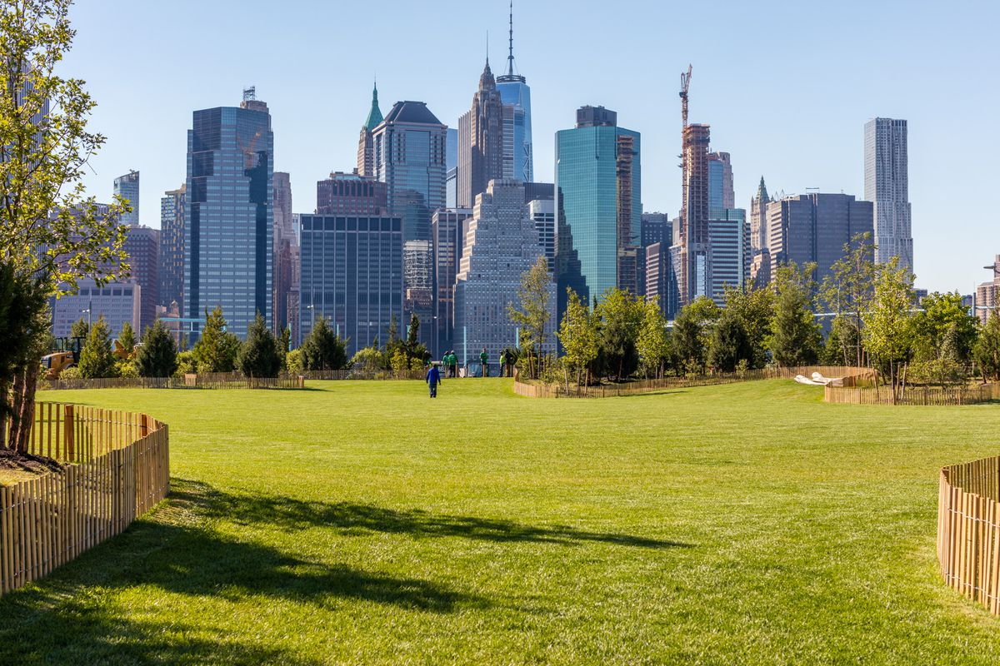
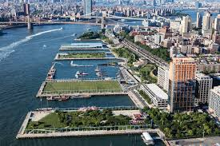
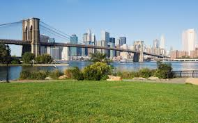

Pictures
Here are some pictures



Directions
Where it is
Take a visit!

New York, US
150 FURMAN ST
150 FURMAN ST
Its the best
Brooklyn Bridge Park fits right in with New York. The diversity of the city is reflected by the large selection of things to do in the park, and in the general area. If someone wanted a nice picnic with their friends, they could go to the huge grass field shaded by trees. If someone wanted to play a game of football, they could head over to the football fields, which always have a cool ocean breeze that feels perfect on a hot summer day. There is a sightseeing boat service there, so if you wanted a relaxing day on the water, you could get a ticket to one of the boats and enjoy a day on the East River looking at the Manhattan skyline. The park is dynamic in so many ways. No matter the weather or the time of day, you can go there and find something to do. The park gives off a sense of freedom in the way that there are so many possibilities that can happen and so many things you can do there. In summer, it's the most active, with every activity available, from the pool to roller skating. In fall, however, when it is colder, it is the perfect weather to go out for a brisk walk on the walking paths. Walking through the park at night is an experience that I heavily recommend you try. Its magical, from the sound of the pitch black water crashing into the shore to the skyline.
Here are some pictures
Take a visit!